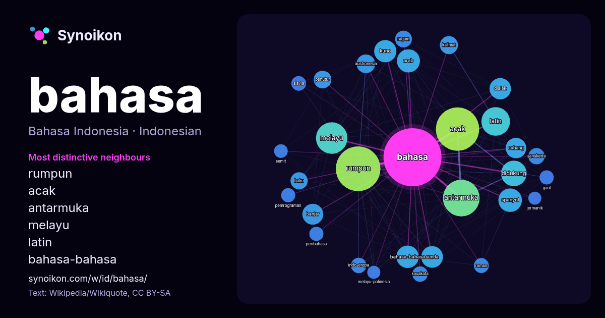

Bahasa Indonesia · kata populer
bahasa
“language” · Kata-kata di sekitarnya dalam 2614 kemunculan dari Wikipedia, Wikiquote.

Tetangga paling khas
- rumpun 147×
- acak 140×
- antarmuka 115×
- melayu 57×
- latin 53×
- bahasa-bahasa 49×
- austronesia 41×
- didukung 41×
- banjar 35×
- dialek 34×
- sunda 34×
- penutur 32×
- sanskerta 31×
- indo-eropa 30×
- ragam 28×
- spanyol 27×
- baku 27×
- kalimat 27×
- kosakata 26×
- slavia 26×
× = berapa kali lebih sering daripada di teks Wikipedia umum.
Tetangga paling sering
- indonesia 330
- rumpun 270
- acak 254
- antarmuka 182
- melayu 134
- latin 111
- jawa 107
- didukung 89
- resmi 89
- spanyol 75
- arab 72
- salah 70
- bahasa-bahasa 68
- kuno 67
- sunda 64
- dialek 62
- belanda 60
- banjar 59
- dikenal 59
- memiliki 58
Dalam konteks
- Bahasa adalah suatu sistem komunikasi yang tersusun secara teratur dan terdiri atas tata bahasa serta kosakata. Bahasa merupakan sarana utama bagi manusia Wikipedia snippets · Bahasa
- Proyek pemetaan bahasa ProyekWiki Bahasa Artikel ini menggunakan peta yang dihasilkan dari OpenStreetMap dan juga jejaring peta (mapframe) yang dibuat Wikipedia snippets · Bahasa Indonesia
- artikel bahasa Cari berdasarkan kode ISO 639 (Uji coba) Kolom pencarian ini hanya didukung oleh beberapa antarmuka Halaman bahasa acak Bahasa Inggris Wikipedia snippets · Bahasa Inggris
- ProyekWiki Bahasa Cari artikel bahasa Cari berdasarkan kode ISO 639 (Uji coba) Kolom pencarian ini hanya didukung oleh beberapa antarmuka Halaman bahasa acak Wikipedia snippets · Bahasa Jawa
- artikel bahasa Cari berdasarkan kode ISO 639 (Uji coba) Kolom pencarian ini hanya didukung oleh beberapa antarmuka Halaman bahasa acak Bahasa Sanskerta Wikipedia snippets · Bahasa Sanskerta
- artikel bahasa Cari berdasarkan kode ISO 639 (Uji coba) Kolom pencarian ini hanya didukung oleh beberapa antarmuka Halaman bahasa acak Bahasa Banjar Wikipedia snippets · Bahasa Banjar
- artikel bahasa Cari berdasarkan kode ISO 639 (Uji coba) Kolom pencarian ini hanya didukung oleh beberapa antarmuka Halaman bahasa acak Bahasa Jepang Wikipedia snippets · Bahasa Jepang
- (pelafalan dalam bahasa Indonesia: [bahasa məlaju]; Jawi: بهاس ملايو, Rejang: ꤷꥁꤼ ꤸꥍꤾꤿꥈ) merupakan sebuah bahasa dalam rumpun bahasa Austronesia yang Wikipedia snippets · Bahasa Melayu
Kata lainnya
- air
- anjing
- emas
- iklim
- jantung
- jembatan
- kebenaran
- kehidupan
- kekuasaan
- keluarga
- kematian
- kereta
- kerja
- kesehatan
- kesenian
- kucing
- lingkungan
- makanan
- sains
- sejarah
- tuhan
- uang
Dihitung sebelumnya pada 2026-10-09 dengan pengaturan bawaan (±5 kata, korpus sedang). Peta interaktif dapat memperbaruinya dengan data langsung.
Antarmuka diterjemahkan mesin; koreksi dipersilakan.